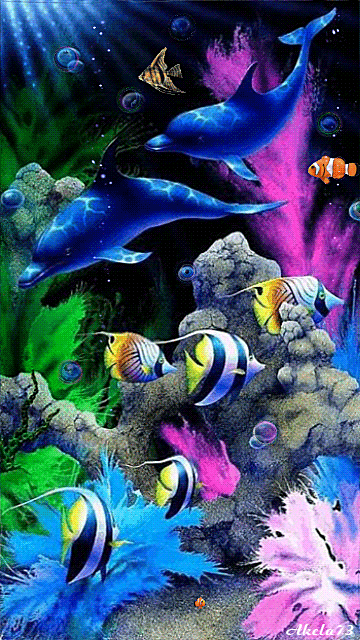
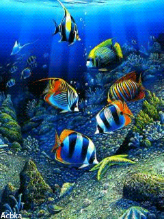
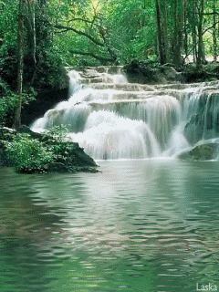
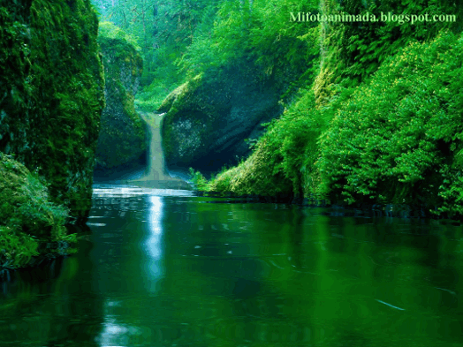

La biodiversidad es la variabilidad de organismos vivos de cualquier clase, incluidos en cualquier tipo de
ecosistemas. Comprende la diversidad dentro de cada especie, entre las especies y entre los ecosistemas.
Pero no se refiere a la cantidad de individuos de cada una de esas especies.
Este concepto, que fue introducido en 1935 por el ecólogo inglés A. G. Tansley,6 tiene en cuenta las complejas
interacciones entre los organismos (por ejemplo plantas, animales, bacterias, protistas y hongos) que forman la
comunidad (biocenosis) y los flujos de energía y materiales que la atraviesan.
Tipos de Biodiversidad

Ecosistema acuático
Los ecosistemas acuáticos incluyen las aguas de los océanos y las aguas continentales dulces o saladas.
Cada uno de estos cuerpos de agua tiene estructuras y propiedades físicas particulares con relación a la luz, la temperatura, las olas, las corrientes y la composición química, así como diferentes tipos de organizaciones ecológicas y de distribución de los organismos.

Ecosistema marino
La oceanografía se ocupa del estudio de estos ecosistemas. Pueden ser de dos tipos dependiendo de la luz solar que reciben:
✾ Fótico: Cuando recibe luz suficiente para la fotosíntesis, lo que sucede hasta los 200 m de profundidad. Ejemplos de ecosistemas de este tipo son el de playa o costero, el de plataforma continental, de mar abierto, arrecife de coral, laguna de atolón, desembocadura de río, etc.16
✾ Afótico: Donde no llega la luz suficiente para la fotosíntesis. Como en el mar poco profundo, mar profundo, abisal, fosa oceánica y la mayor parte del fondo marino.

Ecosistema de agua dulce
La limnología se ocupa del estudio de los ecosistemas de ríos y lagos. En este grupo no solo se consideran los ecosistemas de agua corriente (medios lóticos) y los de agua quieta (medios lénticos), sino también los hábitats acuosos de manantiales, huecos de árboles e incluso las cavidades de
plantas donde se acumula agua y los ambientes de aguas subterráneas.
Ecosistema terrestre
Son aquellos en los que la flora y fauna se desarrollan en el suelo o subsuelo. Dependen de la humedad, temperatura, altitud y latitud, de tal manera que los ecosistemas biológicamente más ricos y diversos se encuentra a mayor humedad, mayor temperatura, menor altitud y menor latitud.
Los ecosistemas pueden clasificarse según el tipo de vegetación, encontrando la mayor biodiversidad en los bosques, y esta va disminuyendo en los matorrales, herbazales, hasta llegar al desierto. Según la densidad de la vegetación predominante, pueden ser abiertos o cerrados. Entre los principales ecosistemas terrestres tenemos:
✾Bosques
✾Mantorrales
✾Herbazales
✾Tundra
✾Desierto
✾Ecosistema de paisaje modificado

Ecosistema mixto
Es el ecosistema inundable o humedal como el pantano o ciénaga, el cual es considerado según sea el caso, un ecosistema terrestre o acuático, o más cercanamente, un híbrido entre ellos. Son suelos cubiertos de agua dulce o salada, permanentemente o durante gran parte del año, encontrándose comúnmente en las llanuras aluviales.
Dependiendo de sus características presentan plantas acuáticas, herbáceas, árboles, helechos, algas y una fauna adaptada a este hábitat. Algunos ecosistemas de este tipo:
Dentro de la microbiología igualmente podemos describir sistemas compuestos de organismos microbianos interdependientes que comparten un mismo hábitat. Entre ellos destacan:
✾Microbiotas: que están conformadas por un conjunto de microorganismos que se localizan de manera normal en distintos sitios del cuerpo de los seres vivos pluricelulares, como por ejemplo en el ser humano.
✾Biopelículas: que son ecosistemas microbianos organizados, conformados por uno o varios microorganismos asociados a una superficie viva o inerte, los cuales presentan características funcionales y estructuras complejas.
✾Gránulos de kéfir: conformados por una masa biótica simbiótica en el que conviven diferentes especies de bacterias probióticas y levaduras, envuelta en una matriz polisacárida, denominada kefiran.